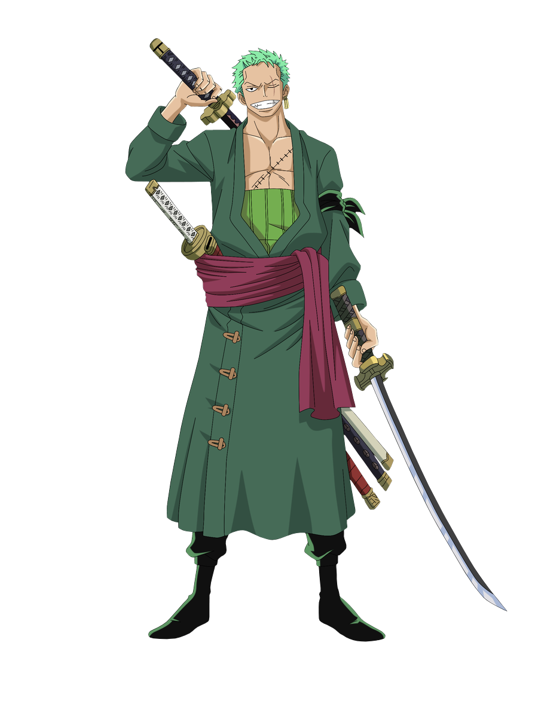
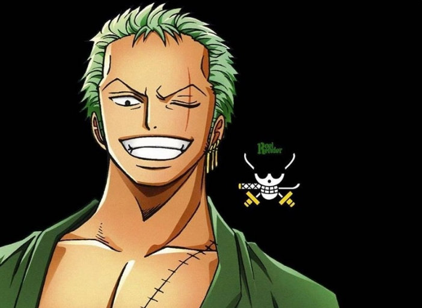
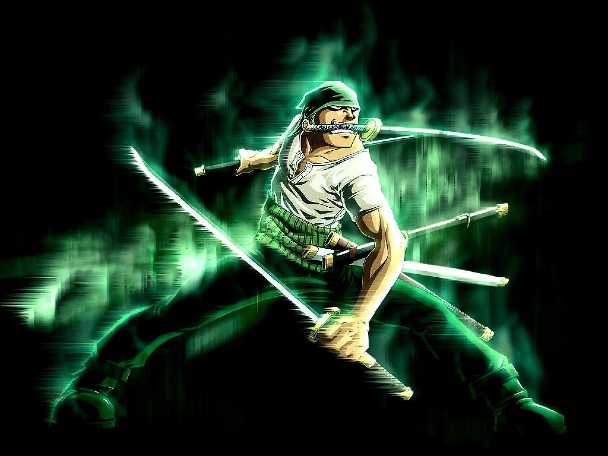
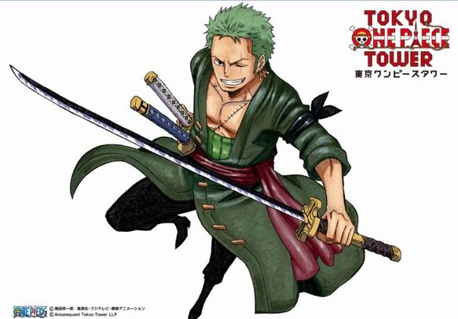
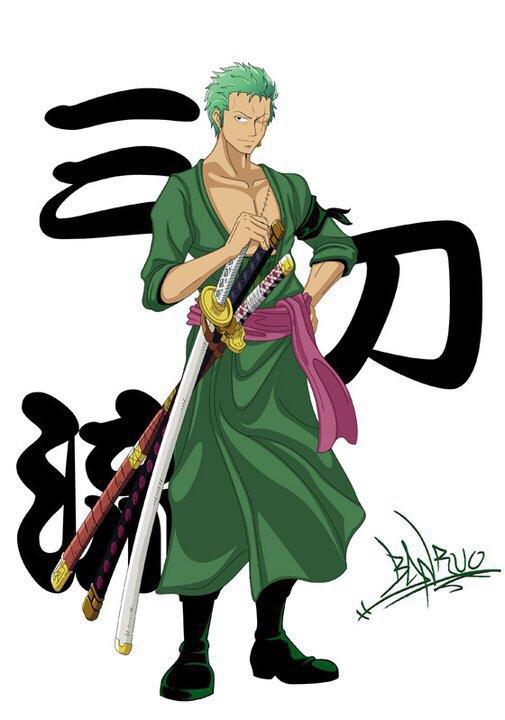
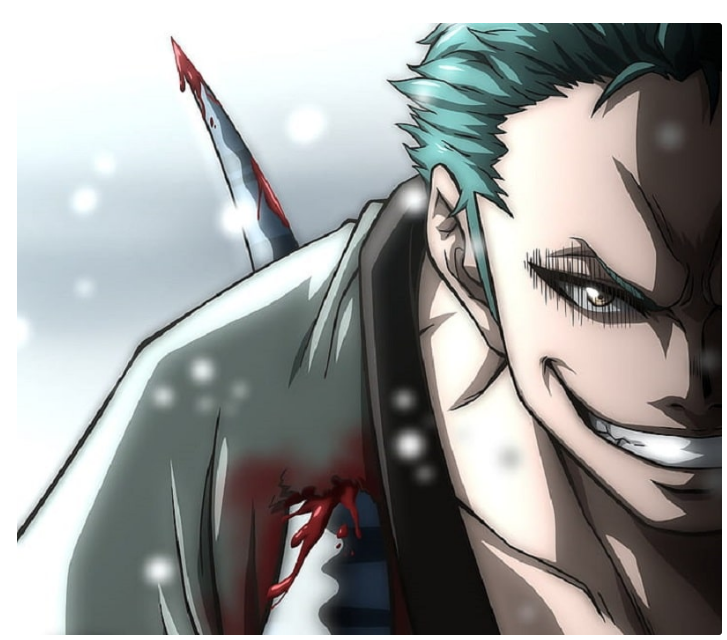
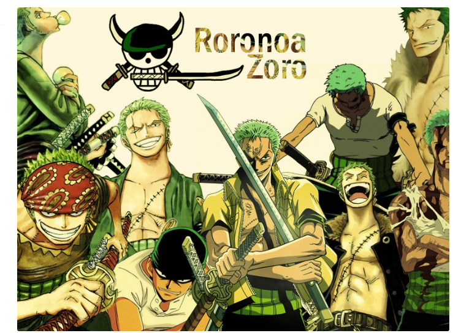
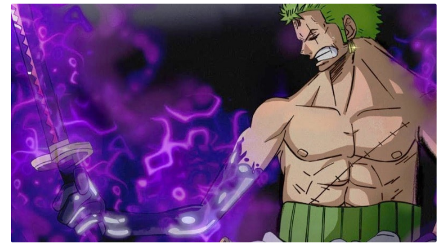
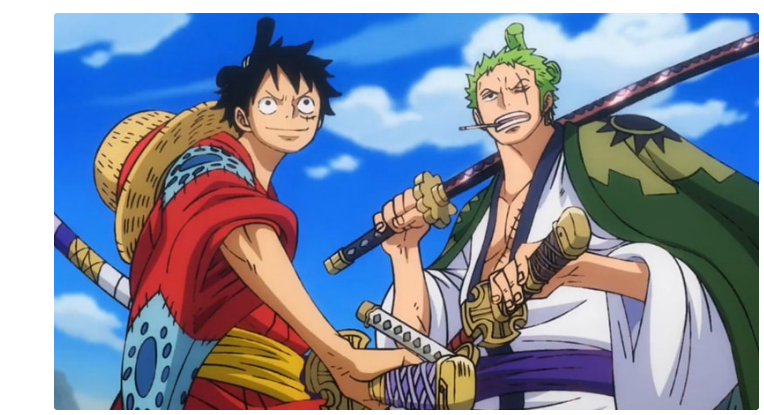

Roronoa Zoro
Tên: Roronoa Zoro( hay thợ săn hải tặc Zoro)
Biệt danh: thánh mù đường
Nơi sinh: Làng Shimotsuki biển đông
Sinh ngày: 11 tháng 11
Tuổi: 21
Chiều cao: 1m81
Mức tiền truy lã: 1,111,000,000$
Yêu thích: thích uống rượu và những thứ liên quan đến rượu
Giới thiệu về Zoro
Roronoa Zoro, còn được biết tới với tên “Thợ săn Hải tặc” Zoro, là kiếm sĩ của băng Hải tặc Mũ Rơm và là cựu thợ săn tiền thưởng.
Anh là thành viên đầu tiên gia nhập đoàn, và tới nay được xem là mối đe dọa lớn nhất và là thành viên đáng gờm nhất trong đội chỉ sau Luffy. Vì nổi tiếng với danh hiệu bậc thầy kiếm thuật và sức mạnh phi thường, cùng với những hành động của thuyền trưởng, nhiều người đã lầm tưởng anh mới chính là thuyền trưởng thật sự của đoàn trước khi anh đạt được tiền thưởng đầu tiên của mình, trong khi một vài người lại tin rằng anh là phó chỉ huy đoàn.

Anh là một trong bốn chiến binh mạnh nhất trong đoàn bên cạnh Luffy, Sanju, và Jinbe, và ước mơ của anh là trở thành kiếm sĩ mạnh nhất trên thế giới. Zoro cũng được xem là một trong mười hai hải tặc dưới tên gọi “Thế hệ Tồi tệ Nhất” (trước đó là “Mười một Siêu Tân Tinh”). Hiện thời anh đang có trị giá tiền thưởng là 1,111,000,000$.
Ngoại hình của Zoro
Zoro là một chàng trai trẻ vạm vỡ, có chiều cao tầm trung với làn da hơi rám nắng. Anh luôn mang theo ba cây kiếm bên mình, gói gọn lại bằng một cái haramaki (băng vải) màu xanh lá ở hông phải để dễ dàng rút chúng ra bằng tay trái.
Trong ba cây kiếm anh mang bên mình, anh luôn mang cây kiếm Wado Ichimonji, trong khi hai cây kiếm còn lại thì qua thời gian được thay thế bằng những cây tốt hơn khi chúng bị phá hủy. Anh có ba bông tai vàng đặc trưng trên dái tai trái. Zoro thường giữ một cái khăn bandanna (khăn vuông) màu đen cột quanh bắp tay trái và sẽ cột nó quanh đầu khi anh chiến đấu nghiêm túc với một đối thủ.
Một đặc điểm nổi bật khác của Zoro đó là mái tóc màu xanh lá ngắn ngủn của anh, là chủ đề trêu chọc thường xuyên của Sanji khi gọi anh là “marimo” (cầu rêu, đầu rêu trong VizManga và FUNimation dub) do sự giống nhau của chúng.

Trước Timeskip, anh luôn mặc quần tây đen nhét vào trong đôi ủng đen, một cái áo sơ mi màu trắng trơn cởi ba nút ở cổ áo và cái haramaki màu xanh lá của anh.
Trong suốt khoảng thời gian hai năm Timeskip và sau đó, Zoro có một vết sẹo mới chạy dài qua mắt trái, biểu lộ việc bị thương nặng vì nó luôn nhắm. Thân hình anh trở nên to lớn hơn, nhiều cơ bắp lộ ra đáng kể và tóc anh bù xù hơn khi được vuốt ngược ra sau.
Hiện giờ Zoro mặc một chiếc áo khoác dài màu xanh lá cây đậm để mở tới thắt lưng và được giữ bởi một dải vải đỏ (red sash), nhét trong đó là ba cây kiếm của anh, và cái bandanna màu đen được cột quanh cánh tay trái của anh. Áo khoác anh để lộ bộ ngực trần và cái haramaki màu xanh của anh bên dưới áo khoác. Anh cũng trở nên cao lớn hơn nhiều, với chiều cao ngang ngửa Robin.
Tính cách Zoro
Zoro thường duy trì một tính cách rất khắt khe, nghiêm túc, và xa cách, nhưng thường nổi nóng một cách hài hước. Anh cũng rất ít khi mỉm cười hay cười to trong băng Mũ Rơm và hiếm khi chọc giỡn với những người trong đoàn.
Zoro rất nhạy bén, bằng chứng là việc anh đưa ra những quyết định quan trọng và hợp lý tại những thời khắc quyết định và đánh giá tình huống bằng quan điểm khách quan.

Với tinh thần kiếm sĩ, anh đề cao danh dự và lòng trung thành. Trong cuộc chiến anh luôn chiến đấu công bằng và từ chối tấn công đối thủ từ phía sau, ngoại trừ khi đồng đội gặp nguy hiểm. Lòng trung thành của anh thể hiện rõ khi luôn nghe theo những quyết định của Luffy cho dù anh có đồng ý hay không, và phản ứng gay gắt với sự phản bội của thành viên trong đoàn.
 Zoro cũng rất nghĩa hiệp, anh luôn giúp đỡ những người yếu đuối. Khi chiến đấu với người yếu hơn hay vô tội, anh luôn chiến đấu bằng phần sống kiếm để không làm tổn thương họ.
Liều lĩnh là một trong những tính cách của Zoro, điều đó thường đánh đổi bằng cả mạng sống của anh. Mặc dù vậy, anh có thói quen làm ngơ trước những vết thương của mình và tiếp tục chiến đấu, đôi khi vết thương cũ còn chưa kịp lành. Anh cũng hay đưa ra những giải pháp kinh khủng cho những vấn đề giản đơn, đề ra giải pháp mà những người khác không dám làm.
Tên của nhiều đòn tấn công đặc biệt và vài thuật ngữ trong truyện có chứa một dạng chơi chữ, trong đó những từ viết bằng Hán tự đi đôi với một cách phát âm khác thường. Chẳng hạn như tên gọi của những đòn đánh của Luffy, Sanji, Chopper, Robin và Franky thường được trộn lẫn với những ngôn ngữ khác, và tên nhiều kĩ thuật của Zoro thường kèm với một trò đùa; chẳng hạn như chúng trông rất đáng sợ nhưng khi đọc ra lại nghe giống tên đồ ăn. Eisaku Inoue, nhà đạo diễn hoạt hình, đã phát biểu rằng những nhà sản xuất anime không sử dụng chữ Hán tự trong phim do chúng "có thể làm cho trò cười bị giảm đi một nửa". Tuy nhiên, Konosuke Uda, tổng đạo diễn, nói rằng ông tin những nhà sản xuất đã "làm cho anime khá gần với manga".
Mặc dù được coi là liều lĩnh và tàn nhẫn, nhìn chung Zoro rất tin vào số mệnh. Anh cũng từng đưa ra những cách xử lý như rút quẻ hay gieo xúc xắc mỗi khi băng Mũ Rơm cần chọn ai đó để làm một việc nào đó.
Zoro rất tự hào về danh tiếng anh đã xây nên cho mình như một kiếm sĩ và như một “Thợ săn Hải tặc”. Anh cũng rất thích thú khi có số tiền thưởng cao hơn Sanji. Mặc dù có lòng tự tôn và tự trọng cao, Zoro cũng sẵn sàng hạ mình vì bạn bè, cụ thể khi anh cầu xin Bartholomew Kuma tha cho Luffy để đổi lấy mạng sống của anh.
Năng lực và sức mạnh
Là một chiến binh cực kỳ mạnh mẽ và đầy tiềm năng, Zoro là một trong bốn chiến binh mạnh nhất của đoàn, có lượng tiền thưởng cao thứ tư, chỉ sau Luffy, Jinbe, và Sanji. Nhiều người còn lầm tưởng anh là thuyền trưởng băng Mũ Rơm sau khi chứng kiến những kĩ năng của anh trong trận chiến cùng với thái độ nghiêm khắc của anh.
Mặc dù gần như lúc nào cũng đối đầu với đồng đội băng Mũ Rơm là Sanji, cả hai là một sự kết hợp gần như không có đối thủ khi chiến đấu cùng nhau, như trong trận đấu với những con quái vật Groggy. Trong những trận chiến với Luffy, cả hai thậm chí gần như ngang nhau.
Năng lực thể chất
Qua những năm tháng rèn luyện với phác đồ cực kỳ nghiêm ngặt từ nhỏ, bao gồm chủ yếu là các bài tập thể hình nặng nhọc bên cạnh rèn luyện chăm chỉ trong kiếm đạo, Zoro có sức mạnh thể chất cực kỳ phi thường, cụ thể là sức lực và tốc độ của anh.
 Sau Timeskip, nhờ hai năm rèn luyện nghiêm ngặt với Dracule Mihawk, Zoro đã trở nên mạnh hơn trông thấy. Anh có thể cắt đôi một chiếc tàu lớn nhanh chóng, chính xác mà không cần tốn công sức. Zoro cũng có thể cắt đôi một tên Pacifista bằng một nhát kiếm, trong khi hai năm trước anh thậm chí không thể làm xước nó.
Ngay cả khi không có kiếm, Zoro vẫn có một sức lực thể chất phi thường. Khi còn rất trẻ, anh đã có thể nhấc tảng đá qua đầu để luyện tập và khi luyện tập bình thường, anh luôn luyện tập với vật có khối lượng nặng. Zoro có thể nhấc và quăng cả một tòa nhà.
Tuy nhiên, Zoro có vẻ không thể điều khiển sức mạnh của mình hiệu quả trước Timeskip. Khi anh cố nương tay khi đánh với những người đóng tàu Galley-la bằng cách dùng sống kiếm, anh vẫn gây ra tổn thất nghiêm trọng.
Sau thời gian Timeskip hai năm, Zoro đã gia tăng sức mạnh thể chất, giỏi trong các cuộc cận chiến, hạ những đối thủ lớn hơn mà không cần vũ khí. Tốc độ và sức bền của anh cũng tăng lên đáng kinh ngạc, anh có thể di chuyển với tốc độ mắt thường gần như không thể thấy, nhảy rất cao, và né đạn dễ dàng. Anh thậm chí có thể bơi dưới nước với tốc độ còn nhanh hơn cả người cá.
Thiếu định hướng
Ngoài trận đấu, Zoro có một trong những khuyết điểm đó là: thiếu định hướng trầm trọng. Anh dễ bị lạc đường ở bất cứ đâu và luôn đi nhầm hướng. Anh thỉnh thoảng còn đi nhầm đường khi mục tiêu đã ở trong tầm nhìn hay khi tìm đường tắt.
Thiền định
Zoro là một chuyên gia về thiền. Anh thường ngồi thiền để giữ bình tĩnh và trau dồi sự tập trung và nhanh nhạy trong kiếm thuật. Nhờ sự luyện tập thiền định chăm chỉ, Zoro đã phát triển những khả năng tâm linh mạnh mẽ.
Kiếm pháp
Zoro là một bậc thầy kiếm thuật cực kỳ mạnh, có thể sử dụng một, hai, và ba thanh kiếm trong những cách tấn công khác nhau, từ cận chiến tới tầm xa. Anh thậm chí có thể dùng Tobu Zangeki (nhát chém bay – Flying Slash Attack), một kỹ thuật kiếm cao cấp lợi dụng áp lực của những lần vung kiếm để hạ đối thủ từ xa.
Bên cạnh kĩ năng phi thường trong Tam Kiếm Phái (Santoryu – Three Swords Style), Đơn Kiếm Phái (Ittoryu – One Sword Style), Zoro cũng là bậc thầy trong Song Kiếm Phái (Nitoryu – Two Swords Style) là phong cách chiến đấu ban đầu của anh thuở nhỏ trước khi bắt đầu luyện tập Tam Kiếm Phái.
Bởi vì chưa từng có ai sử dụng kĩ thuật nào tương tự Santoryu, có thể cho rằng Zoro đã sáng tạo ra không chỉ Santoryu mà phần lớn, nếu không phải là tất cả, những kĩ thuật kiếm của anh. Anh thậm chí còn làm chủ được một kỹ thuật mới trong cuộc chiến với Braham.

Zoro giữ cả ba cây kiếm bên hông phải, một biểu thị cho thấy anh thuận tay trái vì sẽ dễ rút kiếm ra từ bên đó bằng tay trái. Kỹ thuật Đơn Kiếm Phái của anh gần như luôn được thực hiện bằng tay trái. Mặc dù thuận tay trái nhưng Zoro đã luyện tập nghiêm ngặt từ nhỏ để có thể thuận cả hai tay trong kiếm thuật, có thể dùng tay phải và cằm để thực hiện những nhát chém mạnh tương đương với độ chính xác đáng kinh ngạc.
Suốt trận chiến với Kaku, Zoro đã tìm ra được một chiêu thức mới là “Kyutoryu”, làm anh trông như có ba đầu và sáu tay, như thần Asura, khi kích hoạt chiêu thức Kiki Kyutoryu: Asura. Bao quanh anh là một nguồn lực bóng tối, và lần đầu anh kích hoạt nó, mặt đất lay chuyển và vô vàn lỗ xuất hiện trong nó.
Khả năng này cũng cho phép Zoro tận dụng chín cây kiếm trong chiến đấu để gia tăng tiềm lực của mình, và thường được dùng làm chiêu kết thúc trận đấu.
Bá khí (Haki)
Luffy đã chỉ ra rằng Zoro có thể sở hữu Haki, khi thảo luận xem trong các thành viên của đoàn, ai là người có thể đấu với Caesar Clown, một người mang hệ Tự nhiên (Logia). Bởi vì Law nói tới khả năng bao bọc họ trong một lớp áo giáp, Zoro được xác thực là sở hữu khả năng Bá khí Vũ trang (Busoshoku Haki).

Khi chiến đấu với Monet, một người hệ Logia ở đảo Punk Hazard, anh đã có thể chém trên má ả, cho thấy việc sử dụng Busoshoku Haki, sau khi cứu Tashigi.
Tiểu sử của Zoro
Khi còn là trẻ con, Zoro đã rèn luyện tại một võ đường ở làng Shimotsuki. Zoro đã chỉ ra rằng, “Một khi anh quyết định rằng anh sẽ trở thành một kiếm sĩ bất khả chiến bại, anh phải bỏ mặc mạng sống của mình.” Ngay từ nhỏ, Zoro đã đủ mạnh để đánh bại hầu hết người lớn, nhưng lại thua Kuina, con gái của chủ võ đường.
Kuina thổ lộ với anh rằng cô cũng có ước mơ giống anh nhưng sẽ không bao giờ đạt được nó – vì cha cô nói rằng con gái không thể trở thành kiếm sĩ thực thụ, và khả năng chiến đấu của con gái sẽ giảm khi lớn lên. Cả hai cùng hứa một trong hai phải trở thành kiếm sĩ vĩ đại nhất thế giới.

Ngày tiếp theo, Kuina bị ngã cầu thang và mất do đi tìm một viên đá mài kiếm, khiến Zoro vô cùng giận dữ và thất vọng. Anh xin sư phụ là Koshiro, cũng là cha Kuina, cây kiếm của cô, Wado Ichimonnji, và bắt đầu rèn luyện chiêu thức Santoryu, giữ hai cây kiếm của mình ở hai tay, và ngậm kiếm của Kuina bằng răng.
Cuối cùng, Zoro học Dracule Mihawk “Mắt Diều Hâu”, người hiện tại đang giữ danh hiệu Kiếm sĩ Giỏi nhất thế giới. Anh vượt biển, tìm kiếm ông ta để thách đấu tay đôi. Tuy nhiên, anh bị lạc đường và không thể tìm được đường về nhà. Để tồn tại, anh phải săn tiền thưởng để sống.
Anh nhanh chóng nổi danh là “Thợ săn Hải tặc” ở East Blue và thậm chí ở Grand Line khi Baroque Works nghe kể về anh. Anh được xem như kiếm sĩ giỏi nhất ở East Blue, sau đó anh gặp hai thợ săn tiền thưởng là Johnny và Yosaku.
Bởi vì danh tiếng thợ săn tiền thưởng của mình, Zoro được đề nghị gia nhập Baroque Works. Anh trả lời rằng anh chỉ chấp nhận nếu anh được làm chỉ huy tổ chức (điều mà họ từ chối). Sau đó anh tiêu diệt Mr.7, thành viên đã đề nghị anh gia nhập, để tự vệ cho bản thân.
Trên cuộc hành trình, Zoro tới Shells Town. Tại đây anh đã giải cứu một cô bé tên Rika khỏi nanh vuốt con sói cưng của Helmeppo và tự nguyện chịu trói. Sau đó anh gặp Luffy, trở thành thành viên hải tặc thứ hai trong đoàn với Luffy là thuyền trưởng. Hai người sau đó phải rời khỏi đảo để chèo thuyền tới địa điểm kế tiếp.